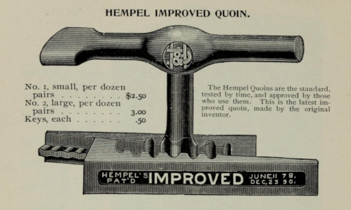

Frequently Asked Questions
Everything you need to know about Quoinlock
What's the story behind the name "Quoinlock"?
The name "Quoinlock" comes from traditional letterpress printing. In letterpress, a quoin (pronounced "coin") is an expandable wedge device used to lock type and printing blocks firmly in place within the chase—the metal frame that holds the printing form. Printers would tighten quoins to secure everything perfectly before printing, ensuring nothing shifted during the press run.
Just as quoins locked type in place to ensure consistent, accurate printing, Quoinlock helps you keep your book metadata locked in and monitored across the digital publishing landscape. We carry forward that tradition of precision and reliability from the age of hand-set type into the modern world of digital book distribution.
What is Quoinlock?
Quoinlock is a book listing monitoring service that tracks your books across hundreds of online retail sites. We help publishers, authors, retailers, and bookstores ensure their book listings are accurate and up-to-date everywhere they appear online.
How does Quoinlock work?
Simply enter your ISBNs into Quoinlock, and we automatically monitor your book listings across hundreds of online retail sites. When we detect any changes to your listings—such as pricing updates, availability changes, or metadata modifications—we send you instant notifications so you can stay informed and take action when needed.
Which sites does Quoinlock monitor?
Quoinlock monitors hundreds of online retail sites, including major platforms such as:
- Bowker Bookwire
- Amazon
- Barnes & Noble
- Walmart
- Bookshop.org
- GoodReads
- And hundreds more
The number of sites monitored depends on your subscription plan.
How often are book listings checked?
Quoinlock continuously monitors your book listings throughout the day. The exact frequency varies by site and subscription level, but most listings are checked multiple times daily to ensure you receive timely notifications of any changes.
What types of changes does Quoinlock detect?
Quoinlock monitors various aspects of your book listings, including:
- Price changes
- Availability status
- Metadata updates (title, description, author)
- Cover image changes
- Category and classification updates
- New or removed listings
How do I get started with Quoinlock?
Getting started with Quoinlock is easy:
- Choose a subscription plan that fits your needs
- Create your account
- Enter your book ISBNs
- We'll handle the rest—monitoring begins immediately!
Can I upgrade or downgrade my plan?
Yes, you can upgrade or downgrade your subscription plan at any time. Changes to your plan will be reflected in your next billing cycle. If you need a custom solution for a large catalog, please contact us to discuss enterprise options.
What kind of support do you offer?
All Quoinlock plans include customer support via email. Response times vary by plan level, with priority support available for higher-tier subscriptions.